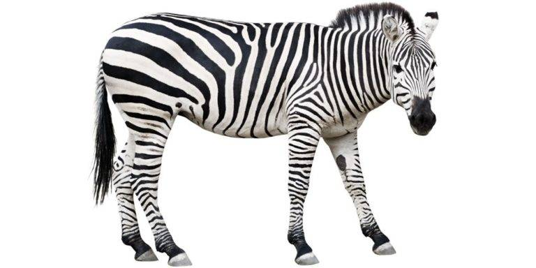
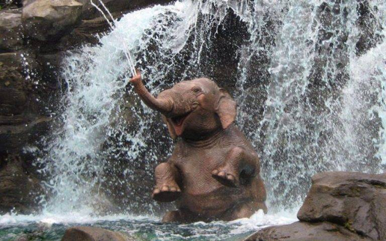

Лев — хищный зверь, является одним из четырёх представителей рода пантер, относящегося к подсемейству больших кошек. Лев является второй по величине из ныне живыщих больших кошек, уступая только тигру. Вес львов-самцов иногда достигает 250 кг.
Современные виды
Panthera leo persica
Panthera leo leo
Panthera leo senegalensis
Panthera leo azandica
Panthera leo nubica
Panthera leo bleyenberghi
Panthera leo krugeri
Panthera leo melanochaita
Легенда о белых львах
В древние времена и по сей день многие африканские племена почитали белого льва как вестника свыше, как образ бога на земле, как самое священное животное саванн. Этим львам поклонялись, их оберегали, и убийство подобного животного, даже непреднамеренное, приравнивалось к святотатству, за которое сам убийца нес тяжелое наказание. Согласно одной из легенд, белый лев стал для людей кем-то вроде греческого Прометея, и давным-давно, когда люди еще были голы и дики, страшная болезнь поразила племена, грозя уничтожить весь род человеческий. Люди плакали и молились богам, денно и нощно просили их о спасении, и вот, смилостившись, боги послали на землю белого льва. Он спустился с небес и принес людям исцеление, после чего ушел, пообещав вернуться, когда подойдет к концу история человечества, чтобы вновь спасти их. И по сей день некоторые племена Африки поклоняются белому льву - своей последней надежде на спасение.
Зебры
Зебра — животное класса млекопитающие, отряда непарнокопытные, семейства лошадиные, рода лошади, подрода зебры (Hippotigris).
Происхождение слова «зебра», вероятнее всего, имеет африканские корни, и позаимствовано колонистами у аборигенов, в диалекте которых есть слово «zebra».

Слоны
Слон — самое большое наземное животное класса млекопитающие, типа хордовые, отряда хоботные, семейства слоновые (Elephantidae).
Где и как живут слоны?
Африканские слоны обитают практически на всей территории жаркой Африки: в Намибии и Сенегале, в Кении и Зимбабве, в Гвинее и Республике Конго, в Судане и ЮАР, прекрасно чувствуют себя слоны в Замбии и Сомали. Основная часть поголовья, к сожалению, вынуждена проживать в национальных заповедниках, чтобы не стать добычей варваров-браконьеров. Слон живет на любом ландшафте, но старается избегать зоны пустынь и слишком густых тропических лесов, предпочитая зону саванн.

Индийские слоны живут на северо-востоке и юге Индии, в Таиланде, Китае и на острове Шри-Ланка, обитают в Мьянме, Лаосе, Вьетнаме и Малайзии. В отличие от собратьев из африканского континента, индийские слоны любят селиться в лесистой местности, предпочитая бамбуковые заросли тропиков и густые кустарники.